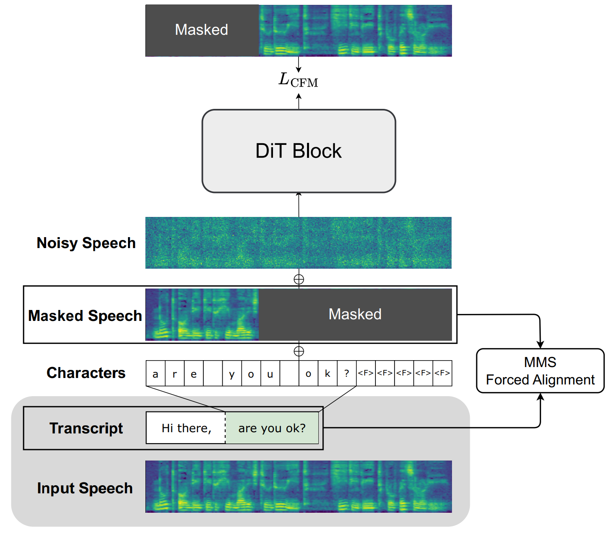
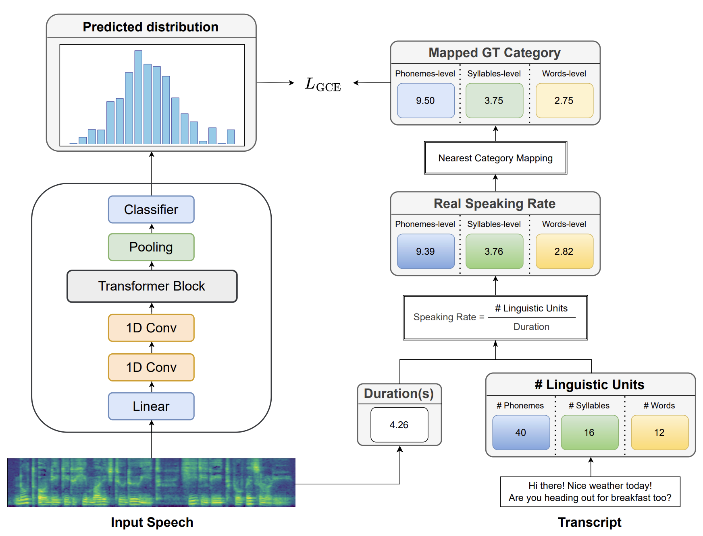

Cross-Lingual F5-TTS
Towards Language-Agnostic Voice Cloning and Speech Synthesis
Paper; Hugging Face
Abstract Flow-matching-based text-to-speech (TTS) models have shown high-quality speech synthesis. However, most current flow-matching-based TTS models still rely on reference transcripts corresponding to the audio prompt for synthesis. This dependency prevents cross-lingual voice cloning when audio prompt transcripts are unavailable, particularly for unseen languages. The key challenges for flow-matching-based TTS models to remove audio prompt transcripts are identifying word boundaries during training and determining appropriate duration during inference. In this paper, we introduce Cross-Lingual F5-TTS, a framework that enables cross-lingual voice cloning without audio prompt transcripts. Our method preprocesses audio prompts by forced alignment to obtain word boundaries, enabling direct synthesis from audio prompts while excluding transcripts during training. To address the duration modeling challenge, we train speaking rate predictors at different linguistic granularities to derive duration from speaker pace. Experiments show that our approach matches the performance of F5-TTS while enabling cross-lingual voice cloning.
Contents
This page is for research demonstration purposes only.
Method Overview
Training Framework

Figure 1: Training framework of Cross-Lingual F5-TTS. MMS forced alignment produces word boundaries for training data, where the left segment serves as transcript-free audio prompt and the mel spectrogram of the right segment is masked for prediction.
Architecture of Speaking Rate Predictor

Figure 2: Training pipeline of the speaking rate predictor. The model predicts discrete rate categories from mel-spectrograms, while ground truth speaking rates are mapped to nearest categories for GCE loss computation.
Intra-Lingual Zero-shot Generation
Prompt and text from the demo page of Seed-TTS.
| Language | Audio Prompt | Text to Generate | Cross-Lingual F5-TTS |
|---|---|---|---|
| EN | I don't really care what you call me. I've been a silent spectator, watching species evolve, empires rise and fall. But always remember, I am mighty and enduring. | ||
| Perhaps they are driven by the delicious blend of flavors, or it could be the appealing visual presentation. At the end of the day, our choices in food reflect our personal preferences and sometimes, even our lifestyle or belief system. | |||
| Your safety and the pack's reputation are at stake. Your bravery is admirable, but sometimes bravery is knowing when to retreat. Please, consider returning with me. We can work out a plan, but only if you're willing to listen. | |||
| ZH | 突然，身边一阵笑声。我看着他们，意气风发地挺直了胸膛，甩了甩那稍显肉感的双臂，轻笑道："我身上的肉，是为了掩饰我爆棚的魅力，否则，岂不吓坏了你们呢？" | ||
| 顿时，气氛变得沉郁起来。乍看之下，一切的困扰仿佛都围绕在我身边。我皱着眉头，感受着那份压力，但我知道我不能放弃，不能认输。于是，我深吸一口气，心底的声音告诉我："无论如何，都要冷静下来，重新开始。" | |||
| 皇上的面色未变，宛如雕塑般静止，他的眼中闪过一丝动人的温度。他深深地看了那位忠心耿耿的臣子一眼，终于开口："诺，我会再考虑考虑的。"他的声音低沉且坚定，留下空气中隐隐的无奈与柔情。 |
Cross-Lingual Zero-shot Generation
Prompt from FLEURS dataset. Each prompt is used to generate speech in both Chinese and English target languages.
| Prompt Language | Audio Prompt | Target Language | Text to Generate | Cross-Lingual F5-TTS |
|---|---|---|---|---|
| German | Chinese | 产品经理，其实是随着互联网发展应运而生的。 | ||
| English | They were voyaging across the deserts of the sky a host of nomads on the march voyaging high over ireland westward bound. | |||
| French | Chinese | 眨眼工夫，几个混混亮明警察身份，一瞬间将其将张某制服。 | ||
| English | If ever he was impelled to cast sin from him and to repent the impulse that moved him was the wish to be her knight. | |||
| Hindi | Chinese | 真不好意思，从小至今，他还从来没有被哪一位异性朋友亲吻过呢。 | ||
| English | The music came nearer and he recalled the words the words of shelley's fragment upon the moon wandering companionless pale for weariness. | |||
| Korean | Chinese | 沉寂了好一阵，这时爱丽丝只能偶尔听到几句微弱的语音，如。 | ||
| English | The retreat will begin on wednesday afternoon in honour of saint francis xavier whose feast day is saturday. |